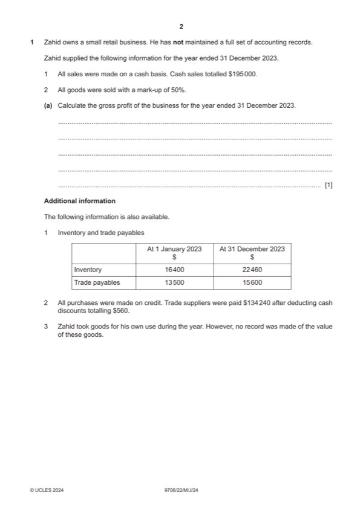

Question 1

Original paper page 2
Part 1(a) — solution
Calculate the gross profit of the business for the year ended 31 1
December 2023.
$65 000 (1)
Mark points
- Include the ideas shown in the solution above.
Part 1(b)(i) — solution
Calculate for the year ended 31 December 2023: 3
Purchases
$136 900 (3) W1
W1
$ $
Bank 134 240 (1)fb Balance b/d 13 500 *
Discounts 560 Purchases 136 900 (1) OF
Balance c/d 15 600 *
150 400 150 400
*(1) for correct use of both balances
Alternative version
$
Mark points
- Include the ideas shown in the solution above.
Part 1(b)(ii) — solution
Answer: 152 460
Calculate for the year ended 31 December 2023: 4
The value of goods taken for own use by Zahid.
$840 (4) W
$ $
Opening inventory 16 400 *
Purchases 136 900 (1) OF
Less goods own use (840) (1) OF
152 460
Closing inventory (22 460) *
130 000 (1) OF
*(1) for both inventories
Alternative version
$
Mark points
- Correct result: 152 460
Part 1(c) — solution
Prepare an extract from the statement of profit or loss for the year ended 12
Mark points
- Include the ideas shown in the solution above.
Part 1(d) — solution
Explain, with reference to an accounting concept, why Zahid made 3
adjustments to his income and expenses when preparing the statement
of profit or loss.
Matching/accruals (1)
To match expenses incurred to the revenue generated (1) in the same
accounting period (1) regardless of whether paid or not (1).
Accept other valid responses
Award 1 mark for concept plus up to 2 marks for explanation
Mark points
- Include the ideas shown in the solution above.
Part 1(e) — solution
- More capital available (1) Limited liability for debts of the
- More expertise / new skills (1) Separate legal identity (1)
- Possibly better decision making Access to more finance (1)
- Possibility of disagreements (1) More complicated / expensive
- Unlimited liability (1) Mandatory financial statements
- Possible slower decision May be subject to external audit
Mark points
- More capital available (1) Limited liability for debts of the
- More expertise / new skills (1) Separate legal identity (1)
- Possibly better decision making Access to more finance (1)
- Possibility of disagreements (1) More complicated / expensive
- Unlimited liability (1) Mandatory financial statements
- Possible slower decision May be subject to external audit
Part 1 — solution
Answer: 154 600
252 000 (1)
Current assets
Inventory 87 600 (1)
Trade and other receivables 38 100 (1)
Cash and cash equivalents 28 900
154 600
Total assets 1 406 600 (1) OF
Equity and liabilities
Equity
Issued share capital 750 000
Share premium 220 000
Revaluation reserve 70 000
Retained earnings 255 800 (1) OF
Total equity 1 295 800 (1) OF
Current liabilities
8% Debentures 90 000 (1)
Trade and other payables 20 800 (1)
Total liabilities 110 800 (1) OF
Total equity and liabilities 1 406 600 (1) OF
University Press & Assessment 2024 Page 11 of 16
9706/22 Cambridge International AS & A Level – Mark Scheme May/June 2024
Mark points
- Correct result: 154 600